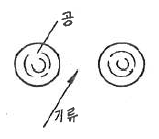
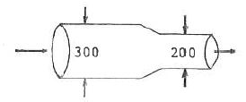
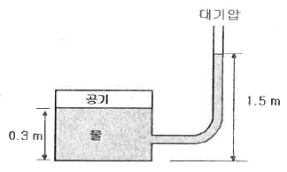

소방설비기사(기계분야) (2014-09-20 기출문제)
1과목: 소방원론
1. 수소 1kg 이 완전연소할 때 필요한 산소량은 몇 kg 인가?
- 4
- 8
- 16
- 32
(정답률: 42%)

2. 물의 기화열이 539cal인 것은 어떤 의미인가?
- 0℃ 의 물 1g 이 얼음으로 변화하는데 539cal 의 열량이 필요하다.
- 0℃ 의 물 1g 이 물로 변화하는데 539cal 의 열량이 필요하다.
- 0℃ 의 물 1g 이 100℃ 의 물로 변화하는데 539cal 의 열량이 필요하다.
- 100℃ 의 물 1g 이 수증기로 변화하는데 539cal 의 열량이 필요하다.
(정답률: 69%)
3. 유류 탱크의 화재 시 탱크 저부의 물이 뜨거운 열류층에 의하여 수증기로 변하면서 급작스런 부피 팽창을 일으켜 유류가 탱크 외부로 분출하는 현상을 무엇이라고 하는가?
- 보일오버
- 슬롭오버
- 블레이브
- 파이어볼
(정답률: 74%)
4. 위험물안전관리법령 상 인화성액체인 클로로벤젠은 몇 석유류에 해당되는가?
- 제1석유류
- 제2석유류
- 제3석유류
- 제4석유류
(정답률: 43%)
5. 제5류 위험물인 자기반응성물질의 성질 및 소화에 관한 사항으로 가장 거리가 먼 것은?
- 대부분 산소를 함유하고 있어 자기연소 또는 내부연소를 일으키기 쉽다.
- 연소속도가 빨라 폭발적인 경우가 많다.
- 질식소화가 효과적이며, 냉각소화는 불가능하다.
- 가열, 충격, 마찰에 의해 폭발의 위험이 있는 것이 있다.
(정답률: 68%)
6. 일반적인 자연발화 예방대책으로 옳지 않은 것은?
- 습도를 높게 유지한다.
- 통풍을 양호하게 한다.
- 열의 축적을 방지한다.
- 주위 온도를 낮게 한다.
(정답률: 75%)
7. 에테르의 공기 중 연소범위률 1.9~48vol% 라고 할 때 이에 대한 설명으로 틀린 것은?
- 공기 중 에테르 증기가 48vol% 를 넘으면 연소한다.
- 연소범위의 상한점이 48vol% 이다.
- 공기 중 에테르 증기가 1.9~48vol% 범위에 있을 때 연소한다.
- 연소범위의 하한점이 1.9vol% 이다.
(정답률: 68%)
8. 공기의 평균 분자량이 29 일 때 이산화탄소 기체의 증기비중은 얼마인가?
- 1.44
- 1.52
- 2.88
- 3.24
(정답률: 71%)
9. A급, B급, C급의 어떤 화재에도 사용할 수 있기 때문에 일명 ABC 소화약제라고도 부르는 제3종 분말 소화 약제의 분자식은?
- NaHCO3
- KHCO3
- NH4H2PO4
- Na2CO3
(정답률: 75%)
10. 할론(Halon) 1301의 분자식은?
- CH3Cl
- CH3Br
- CF3Cl
- CF3Br
(정답률: 74%)
11. 0℃, 1기압에서 11.2L의 기체질량이 22g 이었다면 이 기체의 분자량은 얼마인가? (단, 이상기체를 가정한다.)
- 22
- 35
- 44
- 56
(정답률: 72%)
12. 다음 점화원 중 기계적인 원인으로만 구성된 것은?
- 산화, 중합
- 산화, 분해
- 중합, 화합
- 충격, 마찰
(정답률: 75%)
13. 가연성 액체로부터 발생한 증기가 액체표면에서 연소범위의 하한계에 도달할 수 있는 최저온도를 의미하는 것은?
- 비점
- 연소점
- 발화점
- 인화점
(정답률: 54%)
14. 건물 내 피난동선의 조건으로 옳지 않은 것은?
- 2개 이상의 방향으로 피난할 수 있어야 한다.
- 가급적 단순한 형태로 한다.
- 통로의 말단은 안전한 장소이어야 한다.
- 수직동선은 금하고 수평동선만 고려한다.
(정답률: 76%)
15. 촛불의 주된 연소형태에 해당하는 것은?
- 표면연소
- 분해연소
- 증발연소
- 자기연소
(정답률: 62%)
16. 가연물이 되기 위한 조건으로 가장 거리가 먼 것은?
- 열전도율이 클 것
- 산소와 친화력이 좋을 것
- 비표면적이 넓을 것
- 활성화에너지가 작을 것
(정답률: 72%)
17. 이산화탄소 소화기의 일반적인 성질에서 단점이 아닌 것은?
- 인체의 질식이 우려된다.
- 소화약제의 방출 시 인체에 닿으면 동상이 우려된다.
- 소화약제의 방사 시 소음이 크다.
- 전기를 잘 통하기 때문에 전기설비에 사용할 수 없다.
(정답률: 72%)
18. 전열기의 표면온도가 250℃에서 650℃ 로 상승되면 복사열은 약 몇 배 정도로 상승 하는가?
- 2.5
- 9.7
- 17.2
- 45.1
(정답률: 67%)
19. 다음 중 위험물안전관리법령상 제1류 위험물에 해당하는 것은?
- 염소산나트륨
- 과염소산
- 나트륨
- 황린
(정답률: 60%)
20. 인화칼슘과 물이 반응할 때 생성되는 가스는?
- 아세틸렌
- 황화수소
- 황산
- 포스핀
(정답률: 58%)
2과목: 소방유체역학
21. 에너지선(E.L)에 대한 설명으로 옳은 것은?
- 수력구배선보다 아래에 있다.
- 압력수두와 속도수두의 합이다.
- 속도수두와 위치수도의 합이다.
- 수력구배선보다 속도수두 만큼 위에 있다.
(정답률: 59%)
22. 피스톤이 장치된 용기 속의 온도 100℃, 압력 200㎪, 체적 0.1m3인 이상기체 0.2㎏이 압력이 일정한 과정으로 체적이 0.2m3으로 되었다. 이때 이상기체로 전달된 열량은 약 몇 KJ인가? (단, 이상기체의 정적비열은 4KJ/(㎏·K)이다.)
- 169
- 299
- 319
- 349
(정답률: 33%)
23. 회전속도 1000rpm일 때 송출량 Qm3/min, 전양정 Hm인 원심펌프가 상사한 조건에서 송출량이 1.1Qm3/min가 되도록 회전속도를 증가시킬 때, 전양정은?
- 0.9H
- H
- 1.1H
- 1.21H
(정답률: 68%)
24. 표준대기압 상태인 대기 중에 노출된 큰 저수조의 수면보다 4m 위에 설치된 펌프에서 물을 송출할 때, 펌프 입구에서의 정체압을 절대압력으로 나타내면 약 얼마인가? (단, 모든 손실은 무시한다.)
- 62.1Pa
- 140.5Pa
- 62.1kPa
- 140.5kPa
(정답률: 42%)
25. 노즐 선단에서의 방사압력을 측정하였더니 200kPa(계기압력)이었다면 이 때 물의 순간 유출속도는 몇 m/s인가?
- 10
- 14.1
- 20
- 28.3
(정답률: 57%)
26. 그림과 같이 두 개의 가벼운 공의 사이로 빠른 기류를 불어 넣으면 두 개의 공은 어떻게 되겠는가?

- 뉴턴의 법칙에 따라 벌어진다.
- 뉴턴의 법칙에 따라 가까워진다.
- 베르누이의 법칙에 따라 벌어진다.
- 베르누이의 법칙에 따라 가까워진다.
(정답률: 71%)
27. 베르누이 방정식을 실제유체에 적용시키려면?
- 손실수두의 항을 삽입시키면 된다.
- 실제 유체에는 적용이 불가능하다.
- 베르누이 방정식의 위치수두를 수정하여야 한다.
- 베르누이 방정식은 이상유체와 실제유체에 같이 적용된다.
(정답률: 55%)
28. 온도가 20℃인 이산화탄소 6kg이 체적 0.3m3인 용기에 가득 차 있다. 가스의 압력은 약 몇 kPa 인가? (단, 이산화탄소는 기체상수가 189J/kg·K인 이상기체로 가정한다.)
- 75.6
- 189
- 553.8
- 1108
(정답률: 52%)
29. 지름 2㎝, 속도 50m/s의 수평 물 제트와 지름 3㎝, 속도 40m/s의 수직 물 제트가 분출되어 부딪친 후 하나로 합쳐져 진행할 때 합쳐진 제트의 속도는 약 몇 m/s인가? (단, 제트가 고속이므로 중력효과는 무시한다.)
- 32
- 41
- 45
- 47
(정답률: 31%)
30. "열은 고온열원에서 저온의 물체로 이동하나, 반대로 스스로 돌아갈 수 없는 비가역 변화이다." 다음은 어떤 열역학 법칙을 설명한 것인가?
- 열역학 제0법칙
- 열역학 제1법칙
- 열역학 제2법칙
- 열역학 제3법칙
(정답률: 62%)
31. 그림과 같이 지름이 300mm에서 200mm로 축소된 관으로 물이 흐를 때 질량 유량이 130kg/s라면 작은 관에서의 평균속도는 약 몇 m/s인가?

- 3.84
- 4.14
- 6.24
- 18.4
(정답률: 59%)
32. 그림과 같이 밀폐된 용기 내 공기의 계기압력은 몇 Pa인가?

- 1200
- 1500
- 11760
- 14700
(정답률: 54%)
33. 반지름 2㎝의 금속 공은 선풍기를 켠 상태에서 냉각하고, 반지름 4㎝의 금속 공은 선풍기를 끄고 냉각할 때 대류 열전달율의 비는? (단, 두 경우 온도차는 같고, 선풍기를 켜면 대류 열전달계수가 10배가 된다고 가정한다.)
- 1:0.3375
- 1:0.4
- 1:5
- 1:10
(정답률: 60%)
34. 물탱크에 담긴 물의 수면의 높이가 10m인데, 물탱크 바닥에 원형 구멍이 생겨서 10L/s만큼 유출되고 있다. 원형 구멍의 지름은 약 몇 ㎝ 인가? (단, 구멍의 유량 보정계수는 0.6이다.)
- 2.7
- 3.1
- 3.5
- 3.9
(정답률: 46%)
35. 지름 4㎝의 파이프로 기름(점성계수 0.38Pa·s)이 분당 200kg씩 흐를 때 레이놀즈(Reynolds) 수는 다음 중 어느 값의 범위에 속하는가?
- 100 미만
- 100 이상 500 미만
- 500 이상 1500 미만
- 1500 이상
(정답률: 50%)
36. 댐 수위가 2m 올라갈 때 한 변 1m인 정사각형 연직수문이 받는 정수력이 20% 늘어난다면 댐 수위가 올라가기 전의 수문의 중심과 자유표면의 거리는? (단, 대기압 효과는 무시한다.)
- 2m
- 4m
- 5m
- 10m
(정답률: 27%)
37. 관 마찰계수가 일정할 때 배관 속을 흐르는 유체의 손실 수두에 관한 설명으로 옳은 것은?
- 관 길이에 반비례한다.
- 유속의 제곱에 비례한다.
- 유체의 밀도에 반비례한다.
- 관 내경의 제곱에 반비례한다.
(정답률: 63%)
38. 직경이 40mm인 비눗방울의 내부초과압력이 30N/m2일 때 비눗방울의 표면장력은 몇 N/m 인가?
- 0.075
- 0.15
- 0.2
- 0.3
(정답률: 43%)
39. 직경 10㎝이고 관 마찰계수가 0.04인 원관에 부차적 손실계수가 4인 밸브가 장치되어 있을 때, 이 밸브의 등가길이(상당길이)는 몇 m 인가?
- 0.1
- 1.6
- 10
- 16
(정답률: 58%)
40. 유체에 관한 설명으로 옳지 않은 것은?
- 실제유체는 유동할 때 마찰로 인한 손실이 생긴다.
- 이상유체는 높은 압력에서 밀도가 변화하는 유체이다.
- 유체에 압력을 가하면 체적이 줄어드는 유체는 압축성 유체이다.
- 전단력을 받았을 때 저항하지 못하고 연속적으로 변형하는 물질을 유체라 한다.
(정답률: 60%)
3과목: 소방관계법규
41. 소방특별조사를 실시할 수 있는 경우가 아닌 것은?
- 화재가 자주 발생하였거나 발생할 우려가 뚜렷한 곳에 대한 점검이 필요한 경우
- 재난예측정보, 기상예보 등을 분석한 결과 소방대상물에 화재, 재난·재해의 발생 위험이 높다고 판단되는 경우
- 화재, 재난·재해 등이 발생할 경우 인명 또는 재산 피해의 우려가 낮다고 판단되는 경우
- 관계인이 실시하는 소방시설 등에 대한 자체점검 등이 불성실하거나 불완전하다고 인정되는 경우
(정답률: 68%)
42. 소방시설설치유지 및 안전관리에 관한 법률상의 특정소방대상물 중 오피스텔은 어디에 속하는가?
- 병원시설
- 업무시설
- 공동주택시설
- 근린생활시설
(정답률: 70%)
43. 소방안전관리대상물에 대한 소방안전관리자의 업무가 아닌 것은?
- 소방계획서의 작성
- 소방훈련 및 교육
- 소방시설의 공사 발주
- 자위소방대 및 초기대응체계의 구성
(정답률: 65%)
44. 국고보조의 대상이 되는 소방활동장비 또는 설비에 해당하지 않는 것은?
- 소방자동차
- 소방헬리콥터 및 소방정
- 사무용 집기
- 전산설비
(정답률: 68%)
45. 소방안전관리대상물의 소방안전관리자 업무에 해당하지 않는 것은?
- 소방계획서의 작성 및 시행
- 화기 취급의 감독
- 소방용 기계·기구의 형식승인
- 피난시설, 방화구역 및 방화시설의 유지·관리
(정답률: 71%)
46. 형식승인을 받지 아니한 소방용기계·기구를 판매의 목적으로 진열했을 때의 벌칙으로 옳은 것은?(관련 규정이 변경된듯 합니다. 기존 정답은 1번입니다. 자세한 내용은 해설을 참고하세요.)
- 3년 이하의 징역 또는 1500만원 이하의 벌금
- 2년 이하의 징역 또는 1500만원 이하의 벌금
- 1년 이하의 징역 또는 1000만원 이하의 벌금
- 1년 이하의 징역 또는 500만원 이하의 벌금
(정답률: 58%)
47. 특정소방대상물의 관계인은 근무자 및 거주자에 대한 소방훈련과 교육은 연 몇 회 이상 실시하여야 하는가?
- 연 1회 이상
- 연 2회 이상
- 연 3회 이상
- 연 4회 이상
(정답률: 67%)
48. 시·도지사는 도시의 건물밀집지역 등 화재가 발생할 우려가 있는 경우 화재경계지구로 지정할 수 있는데 지정대상지역으로 옳지 않은 것은?
- 석유화학 제품을 생산하는 공장이 있는 지역
- 공장이 밀집한 지역
- 목조건물이 밀집한 지역
- 소방출동로가 확보된 지역
(정답률: 73%)
49. 관계인이 특정소방대상물에 대한 소방시설공사를 하고자 할 때 소방공사 감리자를 지정하지 않아도 되는 경우는?
- 연면적 1000 m2 이상을 신축하는 특정소방대상물
- 용도 변경으로 인하여 비상방송설비를 추가적으로 설치하여야 하는 특정소방대상물
- 제연설비를 설치하여야 하는 특정소방대상물
- 자동화재탐지설비를 설치하는 길이가 1000 m 이상인 지하구
(정답률: 54%)
50. 소방기본법에서 정의하는 용어에 대한 설명으로 틀린 것은?
- “소방대상물”이란 건축물, 차량, 항해 중인 모든 선박과 산림 그 밖의 공작물 또는 물건을 말한다.
- “관계지역”이란 소방대상물이 있는 장소 및 그 이웃지역으로서 화재의 예방·경계·진압, 구조·구급 등의 활동에 필요한 지역을 말한다.
- “소방본부장”이란 특별시·광역시·도 또는 특별자치도에서 화재의 예방·경계·진압·조사 및 구조·구급 등의 업무를 담당하는 부서의 장을 말한다.
- “소방대장”이란 소방본부장 또는 소방서장 등 화재, 재난·재해 그 밖의 위급한 상황이 발생한 현장에서 소방대를 지휘하는 사람을 말한다.
(정답률: 70%)
51. 제조소 등의 완공검사 신청시기로서 틀린 것은?
- 지하 탱크가 있는 제조소 등의 경우에는 당해 지하탱크를 매설하기 전
- 이동탱크저장소의 경우에 이동저장탱크를 완공하고 상치장소를 확보한 후
- 이송취급소의 경우에는 이송배관 공사의 전체 또는 일부 완료 후
- 배관을 지하에 설치하는 경우에는 소방서장이 지정하는 부분을 매몰 하고 난 직후
(정답률: 68%)
52. 소방업무를 전문적이고 효과적으로 수행하기 위하여 소방대원에게 필요한 소방교육·훈련의 회수와 기간은?
- 2년마다 1회 이상 실시하되, 기간은 1주 이상
- 3년마다 1회 이상 실시하되, 기간은 1주 이상
- 2년마다 1회 이상 실시하되, 기간은 2주 이상
- 3년마다 1회 이상 실시하되, 기간은 2주 이상
(정답률: 68%)
53. 소방시설공사업자의 시공능력을 평가하여 공시할 수 있는 사람은?
- 관계인 또는 발주자
- 소방본부장 또는 소방서장
- 시·도지사
- 소방방재청장
(정답률: 36%)
54. 대통령령 또는 화재안전기준의 변경으로 그 기준이 강화되는 경우 기존의 특정소방대상물의 소방시설 등에 강화된 기준을 적용해야 하는 소방시설로서 옳은 것은?
- 비상경보설비
- 옥내소화전설비
- 스프링클러설비
- 자동화재탐지설비
(정답률: 61%)
55. 특수가연물 중 가연성고체류의 기준으로 옳지 않은 것은?
- 인화점이 40 ℃ 이상 100 ℃ 미만인 것
- 인화점이 100 ℃ 이상 200 ℃ 미만이고, 연소열량이 8 kcal/g 이상인 것
- 인화점이 200 ℃ 이상이고, 연소열량이 8 kcal/g 이상인 것으로서 융점이 100 ℃ 미만인 것
- 인화점이 70 ℃ 이상 250 ℃ 미만이고, 연소열량이 10 kcal/g 이상인 것
(정답률: 41%)
56. 위험물제조소 등의 자체소방대가 갖추어야 하는 화학소방차의 소화능력 및 설비기준으로 틀린 것은?
- 포수용액을 방사하는 화학소방자동차는 방사능력이 2000ℓ/min 이상이어야 한다.
- 이산화탄소를 방사하는 화학소방차는 방사능력이 40 kg/sec 이상이어야 한다.
- 할로겐화합물방사차의 경우 할로겐화합물탱크 및 가압용 가스설비를 비치하여야 한다.
- 제독차를 갖추는 경우 가성소오다 및 규조토를 가각 30 kg 이상 비치하여야 한다.
(정답률: 49%)
57. 소방시설설치유지 및 안전관리에 관한 법률에서 정의하는 소방용품 중 소화설비를 구성하는 제품 및 기기가 아닌 것은?
- 소화전
- 방염제
- 유수제어밸브
- 기동용 수압개폐장치
(정답률: 59%)
58. 제조소 또는 일반취급소의 변경허가를 받아야 하는 경우에 해당하지 않는 것은?
- 배출설비를 신설하는 경우
- 소화기의 종류를 변경하는 경우
- 불활성기체의 봉입장치를 신설하는 경우
- 위험물취급탱크의 탱크전용실을 증설하는 경우
(정답률: 67%)
59. 다음 소방시설 중 피난설비에 속하는 것은?
- 제연설비, 휴대용비상조명등
- 자동화재속보설비, 유도등
- 비상방송설비, 비상벨설비
- 비상조명등, 유도등
(정답률: 66%)
60. 성능위주설계를 하여야 하는 특정소방대상물의 범위의 기준으로 옳지 않은 것은?
- 연면적 3만 m2 이상인 철도 및 도시철도 시설
- 연면적 20만 m2 이상인 특정소방대상물
- 아파트를 포함한 건축물의 높이가 100 m 이상인 특정소방대상물
- 하나의 건축물에 영화 및 비디오물의 진흥에 관한 법률에 따른 영화상영관이 10개 이상인 특정소방대상물
(정답률: 57%)
4과목: 소방기계시설의 구조 및 원리
61. 물분무 헤드의 설치제외 대상이 아닌 것은?
- 운전 시에 표면의 온도가 200℃ 이상으로 되는 등 직접 분무 시 손상우려가 있는 기계장치 장소
- 고온의 물질 및 증류범위가 넓어 끓어 넘치는 위험이 있는 물질을 저장 또는 취급하는 장소
- 물에 심하게 반응하는 물질을 저장 또는 취급하는 장소
- 물과 반응하여 위험한 물질을 생성하는 물질을 저장 또는 취급하는 장소
(정답률: 69%)
62. 포소화설비에 있어 구역 자동 방출밸브(ZONE CONTROL VALVE)와 함께 사용하는 차단밸브(SHUT OFF VALVE)의 설치 위치로 다음 중 가장 적합한 것은?
- ZONE CONTROL VALVE의 양쪽에 설치한다.
- ZONE CONTROL VALVE의 양단의 어느 쪽이든 상관없다.
- ZONE CONTROL VALVE의 1차측(펌프측)에 설치한다.
- ZONE CONTROL VALVE의 2차측(방출측)에 설치한다.
(정답률: 54%)
63. 자동소화장치의 기능으로서 옳지 않은 것은?(관련규정 개정전 문제로 여기서는 기존 정답인 4번을 누르면 정답 처리됩니다. 자세한 내용은 해설을 참고하세요.)
- 가스누설 시 자동경보 기능
- 가스누설 시 가스밸브의 자동차단기능
- 가스렌지 화재 시 소화약제 자동분사 기능
- 가스누설 시 경보발생 및 소화약제 방출
(정답률: 68%)
64. 완강기의 최대사용하중은 몇 N 이상이어야 하는가?
- 800N 이상
- 1000N 이상
- 1200N 이상
- 1500N 이상
(정답률: 75%)
65. 건물 내의 제연 계획으로 자연 제연방식의 특징이 아닌 것은?
- 기구가 간단하다.
- 연기의 부력을 이용하는 원리이므로 외부의 바람에 영향을 받지 않는다.
- 건물 외벽에 제연구나 창문 등을 설치해야 하므로 건축계획에 제약을 받는다.
- 고층건물은 계절별로 연돌효과에 의한 상하 압력차가 달라 제연효과가 불안정하다.
(정답률: 70%)
66. 스프링클러 설비의 고가수조에 설치하지 않아도 되는 것은?
- 수위계
- 배수관
- 오버플로우관
- 압력계
(정답률: 75%)
67. 건식스프링클러 설비에 대한 설명 중 옳지 않은 것은?
- 폐쇄형 스프링클러헤드를 사용한다.
- 건식밸브가 작동하면 경보가 발생된다.
- 건식밸브의 1차측과 2차측은 헤드의 말단까지 일반적으로 공기가 압축, 충진되어 있다.
- 헤드가 화재에 의하여 작동하면 2차측 배관내 공기압이 감소하여 건식밸브가 열린다.
(정답률: 59%)
68. 이산화탄소 소화약제를 저압식 저장용기에 충전하고자 할 때 적합한 충전비는?
- 0.9이상 1.1이하
- 1.1이상 1.4이하
- 1.4이상 1.7이하
- 1.5이상 1.9이하
(정답률: 72%)
69. 연결살수설비의 살수헤드 설치면제 장소가 아닌 곳은?
- 고온의 용광로가 설치된 장소
- 물과 격렬하게 반응하는 물품의 저장 또는 취급하는 장소
- 지상노출 가스저장 59톤 탱크시설
- 냉장창고 또는 냉동창고의 냉장실 또는 냉동고
(정답률: 68%)
70. 습식 스프링클러소화설비의 특징에 대한 설명 중 틀린 것은?
- 초기화재에 효과적이다.
- 소화약제가 물이므로 값이 싸서 경제적이다.
- 헤드 감지부의 구조가 기계적이므로 오동작의 염려가 있다.
- 소모품을 제외한 시설의 수명이 반영구적이다.
(정답률: 70%)
71. 다음 중 완강기의 조속기에 관한 것으로 가장 적당한 것은?
- 조속기는 로프에 걸리는 하중의 크기에 따라서 자동적으로 원심력 브레이크가 작동하여 강하속도를 조절한다.
- 조속기는 사용할 때 체중에 맞추어 인위적 조작으로 강하속도를 조정할 수 있다.
- 조속기는 3개월 마다 분해 점검할 필요가 있다.
- 조속기는 강하자가 손에 잡고 강하하는 것이다.
(정답률: 65%)
72. 특별피난계단의 부속실 등에 설치하는 급기가압방식 제연설비의 측정, 시험, 조정 항목을 열거한 것이다. 이에 속하지 않는 것은?
- 배연구의 설치 위치 및 크기의 적정 여부 확인
- 화재감지기 동작에 의한 제연설비의 작동 여부 확인
- 출입문의 크기와 열리는 방향이 설계 시와 동일한지 여부 확인
- 출입문마다 그 바닥사이의 틈새가 평균적으로 균일한지 여부 확인
(정답률: 43%)
73. 분말소화기의 사용온도 범위로 다음 중 가장 적합한 것은?
- 0℃ ~ 40℃
- 5℃ ~ 40℃
- 10℃ ~ 40℃
- -20℃ ~ 40℃
(정답률: 72%)
74. 청정소화약제 소화설비의 화재안전기준에서 청정소화약제 저장용기 설치기준으로 틀린 것은?
- 용기 간의 간격은 점검에 지장이 없도록 3㎝ 이상의 간격을 유지할 것
- 온도가 40℃ 이하이고 온도가 변화가 작은 곳에 설치할 것
- 직사광선 및 빗물이 침투할 우려가 없는 곳에 설치할 것
- 방화문으로 구획된 실에 설치할 것
(정답률: 59%)
75. 상수도 소화용수설비의 소화전은 구경이 얼마 이상의 수도 배관에 접속하여야 하는가?
- 50mm 이상
- 75mm 이상
- 85mm 이상
- 100mm 이상
(정답률: 58%)
76. 국소방출방식의 포소화설비에서 방호면적을 가장 잘 설명한 것은?
- 방호대상물의 각 부분에서 각각 당해방호대상물 높이의 3배(1m 미만인 경우는 1m)의 거리를 수평으로 연장한 선으로 둘러싸인 부분의 면적
- 방호대상물의 각 부분에서 각각 당해 방호대상물 높이의 0.5m를 더한 거리를 수평으로 연장한 선으로 둘러싸인 부분의 면적
- 방호대상물의 각 부분에서 각각 당해방호대상물 높이의 2배의 거리를 수평으로 연장한 선으로 둘러싸인 부분의 면적
- 방호대상물의 각 부분에서 각각 당해방호대상물 높이의 0.6m를 더한 거리를 수평으로 연장한 선으로 둘러싸인 부분의 면적
(정답률: 47%)
77. 소방대상물내의 보일러실에 제1종 분말소화약제를 사용하여 전역방출방식으로 분말소화설비를 설치할 때 필요한 약제량(kg)으로서 맞는 것은? (단, 방호구역의 개구부에 자동개폐장치를 설치하지 아니한 경우로 방호구역의 체적은 120m3, 개구부의 면적은 20m2이다.)
- 84
- 120
- 140
- 162
(정답률: 42%)
78. 물분무헤드의 설치에서 전압이 110kV 초과 154kV 이하일 때 전기기기와 물분무헤드 사이에 몇 ㎝ 이상의 거리를 확보하여 설치하여야 하는가?
- 80㎝
- 110㎝
- 150㎝
- 180㎝
(정답률: 71%)
79. 다음은 옥내소화전 함의 표시등에 대한 설명이다. 가장 적합한 것은?
- 위치표시등은 평상시 불이 켜지지 않은 상태로 있어야 한다.
- 기동표시등은 평상시 불이 켜지지 않은 상태로 있어야 한다.
- 위치표시등 및 기동표시등은 평상시 불이 켜진 상태로 있어야 한다.
- 위치표시등 및 기동표시등은 평상시 불이 안 켜진 상태로 있어야 한다.
(정답률: 67%)
80. 다음 중 자동소화장치를 설치하여야하는 소방 대상물은?
- 연면적 33m2 이상인 것
- 지정문화재
- 터널
- 아파트
(정답률: 51%)
2H2 + O2 → 2H2O
반응식에서 보듯이 수소 2몰에 대해 산소 1몰이 필요하다. 따라서 수소 1kg에 대해 산소는 0.5kg이 필요하다. 즉, 정답은 8이다.